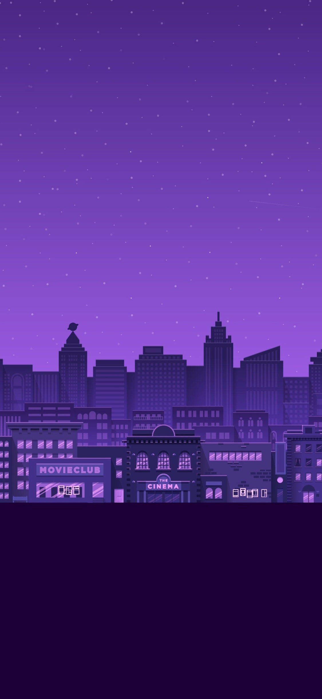

My name is Jennelie Cohen. I'm 21 years old and from Stockholm, Sweden, but currently living in Jönköping.
I chose to study NMD because I'm interested in working with people and digital creation,
so finding an intermediator between them in the form of for example UX seemed fun.
My hobbies are:
